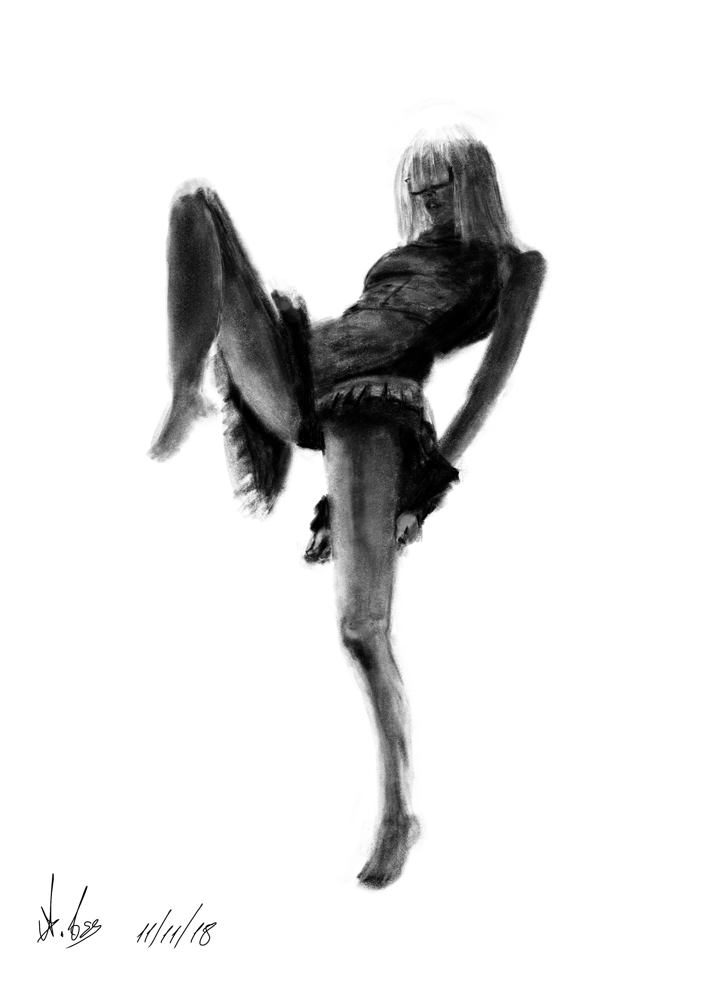

'Discipline'

'Gaga'

'Leg Man'

'Touchdown'
A collection of poses drawn by the artist, which were inspired by images from social media and classes he attended for life drawings. Most of the subjects are female, except for 'Leg Man'. Feedback was requested from an another artist who had studied the human anatomy, and after looking at the drawing he mentioned something was wrong with the legs but could not figure out what, which resulted in the name.
'Discipline'
'Gaga'
'Leg Man'
'Touchdown'